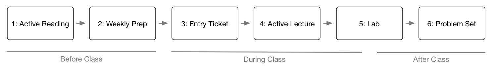

2.3 Course Flow

Both Quantitative Analysis and Introduction to GIS follow the same weekly flow or progression. The structure of the assignments and course materials presupposes that you adhere to this progression.
2.3.1 Reading with Purpose
The book and article reading assignments for this course are different from most of the other reading you will do in your graduate program because they are often very technical. Students who are most successful in this course read twice. Read the first time to expose yourself to the material, then take a break from the reading. During this first read, I don’t recommend trying to complete the example problems or programming examples. Focus on the big picture - what are the concepts and ideas that these readings introduce?
During the second read, try to focus in in the details - what are the technical details behind the big picture concepts? I recommend doing this second read with your computer open. Follow along with the examples and execute as much of them as you can. By using this second read through as a way to test the waters and experiment with the week’s content, you can come into the lecture better prepared to take full advantage of the class period. Students who follow this approach are able make important connections and focus on the essential details during lectures because it is their third time being exposed to the course material. They are also in a much stronger position to ask questions.
2.3.2 Lecture Preps
Once you’ve completed the readings for the week, tackle the lecture prep. These short assignments are designed to help prepare you for the upcoming lecture by reviewing some of the concepts from the reading. For many of the preps, I will post replication videos on YouTube that show how to solve each problem and provide some explanation for that process. Use this as an early indication of how well you understood the readings and what questions you might have. Bringing these questions to class is a great way to build your knowledge of the course material.
2.3.3 Active Lectures and Labs
During lectures, I introduce many of the same topics that your readings cover. This again is intentional - it gives you yet another exposure to concepts and techniques that are central to geospatial science. One mistake students sometimes make is focusing on the details of how to do a particular task rather than focusing on when a task should be done. If you know when a task is needed but cannot remember how to do it in R, you can look this information up. Conversely, detailed notes on executing R commands may not be helpful if you are unsure when to use a particular skill. There is no penalty in this course for not knowing how to execute a command from memory; this is what reference materials are for. The most successful students will therefore focus on when a particular skill is warranted first before focusing on how to execute that skill
Getting experience with executing tasks is the purpose of the lab exercises. These are narrowly defined and focused on building your confidence with the specific skills introduced each week. Time for beginning these exercises is given at the end of each class meeting, and replication files will be posted on GitHub for each lab. I suggest that students do not look at replication files until they are truly stumped. Spend some time wrestling with problems and code, and experiment with the trouble shooting process, when the stakes are low and you have a safety-net to catch you. This will prepare you to respond to issues on the problem sets in a more resilient way.
2.3.4 Problem Sets
The problem sets are the key evaluation of your progress in the course. These will cover skills both for the week they are assigned as well as previous weeks to ensure that you are connecting various aspects of the course and are able to transition skills from one week to the next. Replication files will be provided after all problem sets are submitted and grades are returned. Review these replication files regardless of how well you do on a given problem set - there is much to learn from reviewing your progress and seeing a different approach to these assignments.
2.3.5 An Apple a Day
As I noted above, some degree of frustration with these courses is to be expected - functions in R will not work as intended, for example, and the ambiguity of error messages can be excruciating. I suggested above that you build into your approach to the course time to walk away from assignments if you hit a wall. Being able to walk away from an assignment for a day requires excellent time management. If you are waiting until the night before or the day of an assignment’s due day to begin it, you give yourself little room for errors.
I recommend approaching this course in bite size chunks - a little each day. The most successful students do not do all of their reading, homework, and studying in a single sitting. I find that this approach not only creates unnecessary anxiety around assignments, it also dramatically limits the amount of course material you can absorb. Keep in mind that I expect the median student to spend approximately six hours on work for this class each week (twice the amount of in-class time). A sample approach to the class might look something like this:
- Monday: class
- Tuesday: finish lab
- Wednesday: Start problem set
- Thursday: Finish problem set
- Friday: First reading
- Saturday: Second reading
- Sunday: Lecture prep for next class
The single biggest failure point in both courses for students is thinking that the few hours before class are sufficient for doing all of the work required for a particular week. It is the rare student who can do this successfully (not only in terms of meeting the required deadlines but also in terms of actually learning the material). Err on the side of giving yourself too much time to complete work rather than just enough!